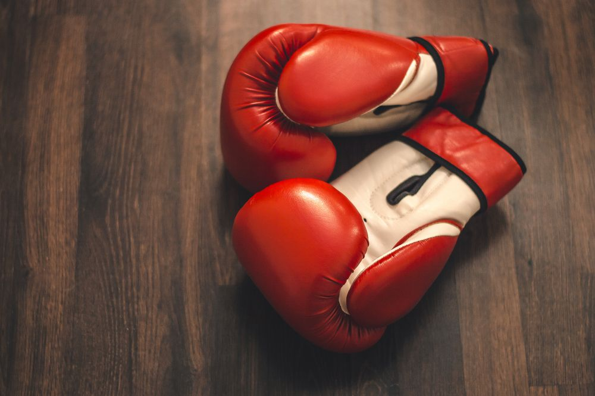

Los guantes de boxeo son los guantes acolchonados reglamentarios que los combatientes usan con el fin de suavizar el impacto de los golpes durante los combates de boxeo.
Son guantes de neopreno acolchados con gel para proteger los nudillos y con una correa de aproximadamente de 2 metros que se ajusta a las muñecas de las manos.
Un saco de boxeo en casa permite entrenar la resistencia, velocidad, agilidad, reflejos, fuerza, potencia... de forma muy divertida.
es una funda dental realizada en goma flexible, además de ser una protección para la boca, la mandíbula y huesos de la cara, también, gracias a la postura que toma la mandíbula, alejada de la base del cráneo, nos protege también la columna.
Cuando recibes un golpe directo, el casco te protege contra los posibles cortes de piel que se pueden dar, además de mitigar el impacto y prevenir una contusión cerebral o interna dentro del cráneo.
herramienta que garantiza eficiencia y acondicionamiento. Correr es uno de los entrenamientos que mejora la resistencia cardiovascular. Sin embargo, el salto de cuerda trabaja, además, los brazos, muñecas y hombros, siendo la que más se aproxima a imitar el ritmo del boxeo.
son muy prácticas para determinados ejercicios enfocados a mejorar la precisión, la velocidad y la coordinación de tus golpes. Generalmente el coach o entrenador se las coloca y el deportista golpea sobre ellas.
Los pantalones de boxeo no son tan solo una prenda de vestir, sino que marcan una zona en la que se prohíben los golpeos por lo que delimitan la zona de golpeos permitidos sobre el cuerpo. Un boxeador no puede subir al ring con cualquier tipo de pantalón, se deben respetar ciertas medidas.
Las botas de boxeo son un complemento más a la hora de practicar boxeo, un accesorio que ayuda a tener una comodidad sobre el ring total. Como ocurre con todos los zapatos específicos de deporte, para el boxeo también cuenta con sus particularidades.